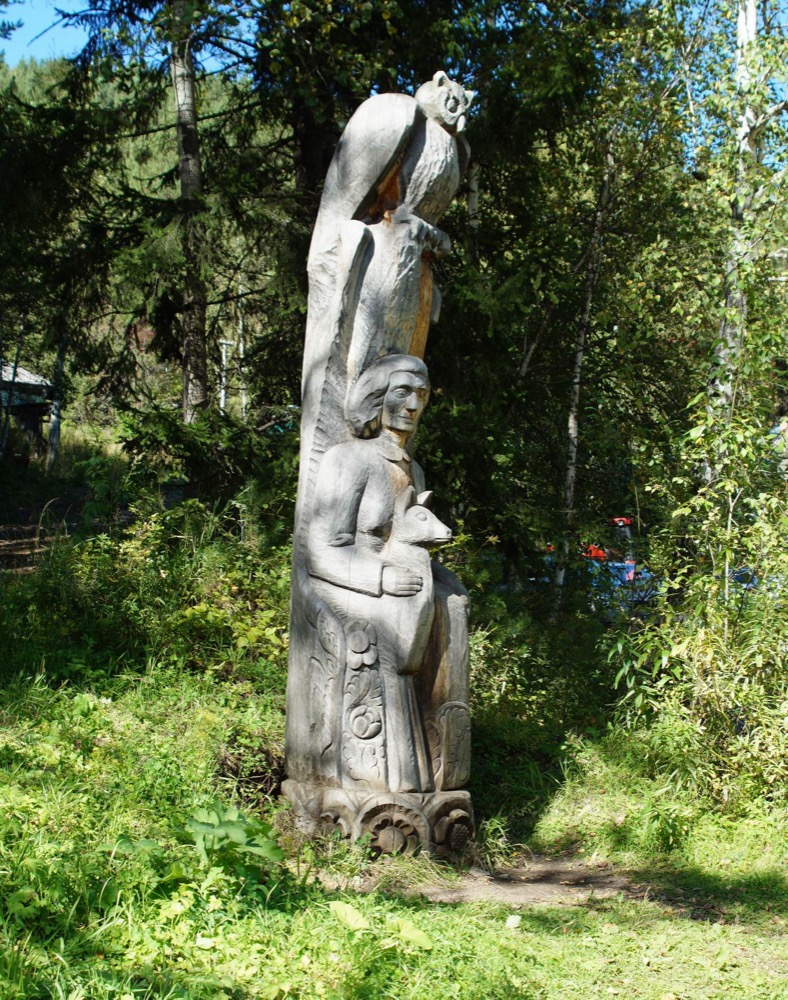

Карачаево-Черкесия
Бадукские озёра
Средняя 3,5 км в одну сторону
Тропа проходит через лес к каскаду из трёх горных озёр.
Подробнее: Бадукские озёраВыберите маршрут по названию, региону, расстоянию и сложности.
Длину и возможность посещения уточняйте по официальной карточке.
Найдено маршрутов: 6
Карачаево-Черкесия
Средняя 3,5 км в одну сторону
Тропа проходит через лес к каскаду из трёх горных озёр.
Подробнее: Бадукские озёра
Карачаево-Черкесия
Лёгкая 0,5 км в одну сторону
Короткая лесная тропа к водопаду.
Подробнее: Водопад Шумка
Красноярский край
Средняя 2,5 км по описанию парка
Маршрут по Центральному скальному району национального парка. Подходит для знакомства с природными скальными формами.
Подробнее: Природа — великий скульптор
Красноярский край
Повышенная 9,6 км по описанию парка
Протяжённый маршрут от Центрального входа в районе кордона Лалетино к ручью Беркутовскому.
Подробнее: ЛалетинскийКрасноярский край
Лёгкая 1,2 км по описанию парка
Короткая экологическая тропа у Центрального входа. Знакомит посетителей с природой национального парка.
Подробнее: Книга природыКрасноярский край
Лёгкая 200 м по описанию парка
Небольшая экотропа у научно-познавательного комплекса «Нарым» в районе Центрального входа.
Подробнее: Белая тропа